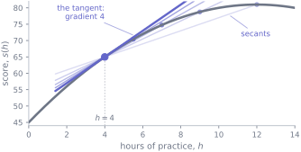
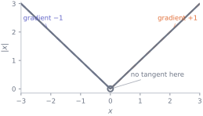
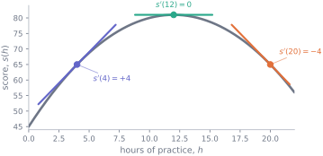

Unit 3 · Lesson 4 of 4 · Mathematics · M3Reading: 6 pagesWith practice: ≈ 2 hoursAssumes: M1, M2
Why this lesson is here
Every model you will ever fit is chosen by asking one question over and over: if I nudge this number slightly, does the model get better or worse?
That question is a derivative. It is the same question whether you are tuning a single parameter by hand or letting a neural network tune ten million of them, and it is the idea that M4 to M7 are built on. Before any of that, though, a derivative is something much more ordinary: a way of saying how quickly one quantity responds to a change in another.
Before you start
You should be able to:
read a graph and find the gradient of a straight line — M1 ;
If that took real effort, reread M1 before going on. Everything below is this calculation, applied to curves instead of lines.
The idea
Throughout these notes we use one dataset: a synthetic record of a previous cohort who worked through this material. Here are three of its columns.
import pandas as pdcohort = pd.read_csv("data/cohort.csv")cohort[["background", "hours_practice", "final_score"]].head()
background
hours_practice
final_score
0
Mathematics or Physics
12.9
83.6
1
Life sciences
22.8
56.6
2
Engineering
1.7
58.5
3
Computing
7.5
67.5
4
Computing
13.5
73.8
Suppose we model how a student’s final score responds to hours of practice. For one particular group of students, a reasonable-looking model is
\[
s(h) = 45 + 6h - 0.25h^{2}
\]
where \(h\) is hours of practice and \(s\) is the final score in marks.
Now ask: how fast is the score improving?
That question has no single answer until you say where. Between \(h = 0\) and \(h = 4\) the score climbs from 45 to 65, so it is improving at
\[
\frac{s(4) - s(0)}{4 - 0} = \frac{65 - 45}{4} = 5 \text{ marks per hour.}
\]
Between \(h = 20\) and \(h = 24\) the same model gives \(s(20) = 65\) and \(s(24) = 45\), an average of \(-5\) marks per hour. The model says the same student, practising the same amount, is now going backwards. Same curve, two opposite answers, because we asked about two different places on it.
This quantity — change in output divided by change in input — is the average rate of change, and it always refers to an interval, never to a point.
Shrinking the interval
To talk about the rate at a single value of \(h\), take shorter and shorter intervals around it. Both sides matter, so we shrink towards \(h = 4\) from above and from below:
def s(h):return45+6*h -0.25*h**2print(f"{'interval':>9}{'from the right':>14}{'from the left':>13}")for step in [4, 2, 1, 0.5, 0.1, 0.01]: right = (s(4+ step) - s(4)) / step left = (s(4- step) - s(4)) / (-step)print(f"{step:>9}{right:>14.4f}{left:>13.4f}")
interval from the right from the left
4 3.0000 5.0000
2 3.5000 4.5000
1 3.7500 4.2500
0.5 3.8750 4.1250
0.1 3.9750 4.0250
0.01 3.9975 4.0025

Figure 16.1: Each faint line joins \(h=4\) to a point further along the curve; its gradient is one row of the table above. As that second point slides in, the lines settle onto the single bold line — the tangent, whose gradient is 4.
Both columns are settling on 4, one from below and one from above. Neither ever reaches 4 — every row uses a genuine interval of some width — but both get and stay as close to 4 as you like, by taking the interval short enough. That the two sides agree is not a formality; later in this lesson you will meet a function where they do not.
That settled-on value is the derivative of \(s\) at \(h = 4\), written \(s'(4)\). We say \(s'(4) = 4\) marks per hour.
Two readings of the same number, both worth carrying:
Geometric.\(s'(4)\) is the gradient of the tangent to the curve at \(h = 4\). Each row of the table above is the gradient of a line through two points on the curve; as the second point slides towards the first, those lines settle into one limiting position, and that is the tangent. (It is tempting to define a tangent as the line that touches the curve once and does not cross it. That is a useful picture here but not a definition — some tangents do cross their curve at the point of contact.)
Practical.\(s'(4)\) is the sensitivity of the score to practice at that point: one more hour buys roughly 4 more marks. This is the reading you will use constantly from M6 onwards, and it is the reason a derivative carries the units of the output divided by the units of the input — here, marks per hour.
The mechanics
The difference quotient
For a function \(f\) and a point \(a\), the average rate of change over an interval of width \(h\) is
\[
\frac{f(a + h) - f(a)}{h}
\]
which is called the difference quotient. The derivative is the value it settles on as \(h\) shrinks towards zero, written
Read \(\lim_{h \to 0}\) as “the value this settles on as \(h\) gets arbitrarily small”. You cannot simply put \(h = 0\): that gives \(0/0\), which is not a number. The whole point of the notation is to say approach zero without arriving.
The symbol \(h\) is doing two different jobs on this page: it is hours of practice in the worked model, and interval width in the general definition. That collision is normal in mathematics and worth noticing rather than tripping over. In the general definition, \(h\) is always the interval width.
The second line multiplies out the bracket: \((x+h)^{2} = (x+h)(x+h) = x^{2} + xh + hx + h^{2} = x^{2} + 2xh + h^{2}\). The last step is legitimate because \(h\) is small but not zero, so dividing by it is allowed. Now let \(h\) shrink: the expression settles on \(2x\). So
\[
f(x) = x^{2} \implies f'(x) = 2x.
\]
The same three moves — expand, cancel the \(h\) in the denominator, let what remains shrink — handle every first-principles derivative you will be asked for. In M4 you will get rules that make this unnecessary, but doing it by hand two or three times first is what makes those rules mean something.
When there is no derivative
A derivative does not always exist. The clearest failure is a corner. Take \(f(x) = |x|\), the absolute value (the size of \(x\) ignoring its sign, abs(x) in Python), at \(x = 0\): approaching from the right, the difference quotient is always \(+1\); from the left it is always \(-1\). The two sides disagree, so nothing settles, so \(f'(0)\) does not exist.
for step in [1, 0.1, 0.001]: right = (abs(0+ step) -abs(0)) / step left = (abs(0- step) -abs(0)) / (-step)print(f"step {step:<7} from the right {right:+.0f} from the left {left:+.0f}")
step 1 from the right +1 from the left -1
step 0.1 from the right +1 from the left -1
step 0.001 from the right +1 from the left -1

Figure 16.2: At every point except the origin, \(|x|\) has an unambiguous tangent. At \(x=0\) the two sides disagree — one arrives with gradient \(-1\), the other with \(+1\) — so no single line fits, and there is no derivative there.
The function is perfectly well behaved — continuous (its graph can be drawn without lifting the pen), defined everywhere, easy to draw. It has no single tangent at that point. Continuity is not enough for differentiability, and that gap matters later: some loss functions used in practice have exactly this kind of kink.
The tangent line
Once you have \(f'(a)\), you have the straight line that best matches \(f\) near \(a\):
\[
f(x) \;\approx\; f(a) + f'(a)\,(x - a).
\]
This is the local linear approximation. It says: start from the value at \(a\), then move along at the rate you measured there. It is exact at \(x = a\) and gets worse as you move away, and it is the single most useful approximation in applied mathematics — M6 is essentially this idea in many variables at once.
Worked example
The model above has a best value, and the derivative finds it.
Our model was \(s(h) = 45 + 6h - 0.25h^{2}\). Differentiate from first principles.
(Here \(t\) is the interval width, since \(h\) is already in use.) Letting \(t\) shrink gives
\[
s'(h) = 6 - 0.5h.
\]
Now read it:
Sensitivity of the model at four values of \(h\)
\(h\)
\(s'(h)\)
what it says
4
\(+4.0\)
an extra hour is worth about 4 marks
10
\(+1.0\)
still improving, but four times more slowly
12
\(0.0\)
the model has stopped improving at this instant
20
\(-4.0\)
the model now predicts the score falling

Figure 16.3: The same curve with its tangent drawn at three places. The gradient falls steadily, reaches zero at \(h=12\) where the curve is momentarily flat, and is negative beyond it.
Two things are worth saying about that last row, and both are habits rather than calculations.
First, solving \(s'(h) = 0\) is how you find candidates for a best value without plotting anything. A zero derivative marks a place where the curve is momentarily flat; whether that is a maximum, a minimum or neither is a further question, and so is whether the true best value sits at the edge of the allowed range instead. Here the model is a downward parabola, so \(h = 12\) really is its peak. Doing that properly is the whole of M5.
Note also what \(s'(12) = 0\) does not say. It is an instantaneous rate, not the value of one more hour: \(s(13) - s(12) = -0.25\) marks. The distinction between a rate at a point and a change over an interval is the same one this lesson opened with, and it does not go away once you have a derivative.
Second, the model predicts that practising for 20 hours is worse than practising for 12. Nothing in the data forces that; it is an artefact of having chosen a downward parabola, which must eventually come down. A derivative tells you what your model does. Whether the model deserves to be believed out there is a separate question, and one that S11 takes seriously.
Try it yourself
Exercise 1 From first principles, differentiate \(f(x) = 5x - 2\).
There is no \(h\) left to shrink, so \(f'(x) = 5\) for every \(x\). That is what you should expect: the graph is a straight line of gradient 5, and its tangent is itself.
Exercise 2 From first principles, differentiate \(f(x) = x^{2} - 3x\).
As \(h\) shrinks this settles on \(f'(x) = 2x - 3\).
Sanity check: at \(x = 1.5\) the derivative is zero. Since \(f(x) = x(x - 3)\), the curve crosses zero at \(x = 0\) and \(x = 3\), and a parabola is symmetric, so its bottom sits halfway between them — at \(x = 1.5\).
Exercise 3 A university models the cost of running a module as a smooth function \(C(n)\) of the number of students enrolled, in pounds. (Enrolment is a whole number, so \(C\) is a continuous stand-in for something discrete — a very common move, and one worth noticing.) You are told that \(C'(100) = 42\).
Write down, in one sentence and with units, what that means. Then say what it does not tell you.
TipShow the solution
It means that at an enrolment of 100 students, the modelled cost is rising at £42 per additional student. Using the local linear approximation, the 101st student is expected to add roughly £42 — roughly, because the derivative describes the rate at exactly \(n = 100\), while the 101st student is a whole unit away.
It does not tell you the total cost \(C(100)\): a rate says nothing about a level. It also says nothing about the 200th student, because the rate can change — indeed it usually does, which is the entire reason we need derivatives rather than a single number.
Check it in Python
You will rarely differentiate by hand in practice, but you should always be able to check that you did it right. The tool is a centred difference: evaluate a small step either side and take the gradient between them.
import numpy as npdef s(h):return45+6*h -0.25*h**2def s_prime(h): # our by-hand answerreturn6-0.5*hdef centred_difference(f, x, step):return (f(x + step) - f(x - step)) / (2* step)for h in [4, 10, 12, 20]: approx = centred_difference(s, h, 1e-6) exact = s_prime(h)print(f"h={h:>3} numerical {approx:+.6f} by hand {exact:+.6f} agree: {np.isclose(approx, exact)}")
h= 4 numerical +4.000000 by hand +4.000000 agree: True
h= 10 numerical +1.000000 by hand +1.000000 agree: True
h= 12 numerical +0.000000 by hand +0.000000 agree: True
h= 20 numerical -4.000000 by hand -4.000000 agree: True
Agreement at four points is evidence, not proof. A disagreement is worth taking seriously, but it is not by itself proof that the algebra is wrong — as the next block shows, a perfectly correct derivative can disagree with a badly chosen numerical check.
One trap. It is tempting to think that a smaller step is always better. It is not:
for step in [1e-1, 1e-3, 1e-6, 1e-10, 1e-14]: approx = centred_difference(s, 4.0, step)print(f"step {step:<8.0e} estimate {approx:.10f} error {abs(approx -4.0):.3e}")
The error gets worse as the step shrinks, and by \(10^{-14}\) the estimate is wrong in the first decimal place. The reason is that you are asking the computer to subtract two numbers that agree to fourteen digits; almost all of the digits cancel, and what survives is mostly noise. P2 explains why computers do this.
There is a second effect that this particular model happens to hide. Our \(s\) is a parabola, and for a parabola the two sides of a centred difference cancel exactly, so the method contributes no error at all whatever step you choose. Everything in that table is the arithmetic, not the mathematics.
On a curve that bends more sharply the cancellation is only partial, and a large step then measures the wrong thing because the curve changes direction across the interval. In general both ends are bad and the usable range sits in the middle — around \(10^{-6}\) when \(x\) is of a size near 1. For much larger or smaller values, scale the step to \(x\) rather than using a fixed number, and check that the answer is stable across a few step sizes before trusting it.
Common wrong turns
Where this usually goes wrong
Reading \(f'(a)\) as a value of \(f\)
\(f(4) = 65\) marks. \(f'(4) = 4\) marks per hour. Different quantities, different units. The rule is that a derivative carries the units of the output divided by the units of the input — so if the input is a plain number with no units of its own, the derivative does share the output’s units, and only then.
Reading the derivative off the height of the graph
A curve can be very high and perfectly flat — high \(f\), zero \(f'\) — or close to zero and plunging. The derivative is about steepness, and the two are unrelated.
Assuming every function has a derivative everywhere
\(|x|\) is continuous at \(0\) and has no derivative there. Continuity is necessary but not sufficient.
Dropping the units
“The derivative is 4” is almost useless. “4 marks per hour of practice” can be checked against reality, argued with, and acted on. Carry the units through every line.
Believing the model because the calculus was correct
\(s'(20) = -4\) is a flawless statement about the parabola we chose. Whether practice really harms scores after 12 hours is a question about the world, and the derivative has no opinion on it.
Check yourself
Answers are at the foot of the page. Try to give a reason as well as an answer — if you cannot say why, treat it as wrong.
A function has \(f(2) = 10\) and \(f'(2) = -3\). Using the local linear approximation, what is your estimate of \(f(2.1)\)?
\(10.3\)
\(9.7\)
\(-3\)
The approximation cannot be used here
The rate is negative. As \(x\) increases a little, does \(f\) go up or down?
\(-3\) is a rate of change, not a value of \(f\). Start from \(f(2)\) and adjust it.
A step of \(0.1\) is small, which is exactly what the approximation is for: \(f(2) + f'(2) \times 0.1\).
Water is draining from a tank. \(V(t)\) is the volume in litres after \(t\) minutes. What are the units of \(V'(t)\), and what sign would you expect?
True or false: if \(f\) is continuous at \(x = 0\) then \(f'(0)\) exists.
For \(f(x) = x^2\), the difference quotient simplified to \(2x + h\). Why is it wrong to say “set \(h = 0\) in the original quotient” rather than “let \(h\) shrink”?
Your by-hand derivative and a centred difference disagree in the fourth decimal place. Name two quite different explanations.
TipShow the answers
(b), \(9.7\). The approximation gives \(f(2) + f'(2)(0.1) = 10 - 0.3 = 9.7\). Option (a) gets the sign of the rate wrong; (c) confuses a rate with a value. Note that the question asks for an estimate: two facts about \(f\) at a single point cannot determine its value anywhere else. A sharply curving \(f\) could pass through \((2, 10)\) with gradient \(-3\) and still be nowhere near \(9.7\) at \(x = 2.1\).
Litres per minute, and negative. The tank is emptying, so volume is decreasing, so the rate of change is below zero.
False.\(f(x) = |x|\) is the standard counterexample: continuous at \(0\), no derivative there.
Because at \(h = 0\) the original quotient reads \(0/0\), which is not a number — you cannot divide by zero. The cancellation that produced \(2x + h\) is only valid because\(h \neq 0\). The limit describes where the values head, and deliberately never evaluates at the forbidden point.
Either the algebra is wrong, or the numerical check is: a step size too large (the curve bends across the interval) or too small (floating-point cancellation). Rerun the check at several step sizes before suspecting the algebra — the plot of error against step size will tell you which it is.
Where this shows up next
M4 gives you rules — power, product, chain — so you never have to do first principles again. M5 sets \(f'(x) = 0\) to find best values, which is the calculation behind fitting any model. M6 does all of this with several variables at once and arrives at gradient descent. S11 uses it to fit a straight line to the cohort data, at which point the mathematics, the statistics and the Python all turn out to be the same piece of work.